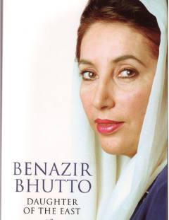

DOBenazir Bhuttoning hayoti va Pokiston siyosiy tarixiga oid ta'sirli avtobiografik asar.
Pokistonning sobiq bosh vaziri Benazir Bhutto tomonidan yozilgan ushbu avtobiografik asar uning hayoti, siyosiy kurashlari va otasi Zulfiqor Ali Bhuttoga qarshi amalga oshirilgan davlat to'ntarishi haqida hikoya qiladi. Kitob muallifning demokratiya yo'lidagi mashaqqatli yo'li va Pokiston tarixidagi muhim davrlar haqidagi shaxsiy xotiralarini qamrab oladi.